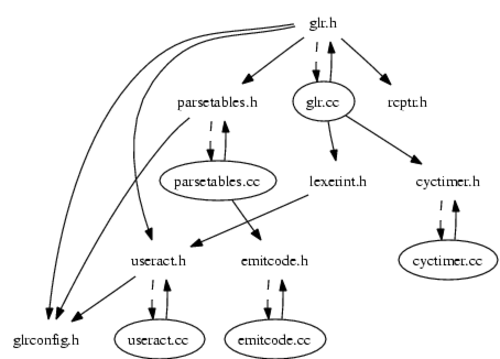

Elkhound Overview
Elkhound is a parser generator, similar to Bison. The
parsers it generates use the Generalized LR (GLR) parsing algorithm.
GLR works with any context-free grammar, whereas LR parsers
(such as Bison) require grammars to be LALR(1).
This page is an overview of the implementation. Additional documentation
is available:
To download Elkhound and Elsa, see the
Elkhound distribution page.
Elkhound requires the following external software:
- ast, a system for making abstract syntax trees.
- smbase, my utility library.
- Flex,
a lexical analyzer generator.
- Bison,
a parser generator. (Elkhound does not need Bison once it has been compiled.)
Build instructions:
$ ./configure
$ make
$ make check
./configure understands
these options. You can also
look at the Makefile.
Module List:
- asockind.h,
asockind.cc:
AssocKind, an enumeration of the kinds of associativity.
- cyctimer.h,
cyctimer.cc:
CycleTimer, which times a section of code in cycles and milliseconds.
- emitcode.h,
emitcode.cc:
EmitCode, a class to manage the printing of generated code. Its
main contribution is knowledge of how to insert #line directives.
- flatutil.h:
A few utilities on top of the Flatten interface
(smbase/flatten.h).
- genml.h,
genml.cc:
This module generates parse tables as ML syntax, for when Elkhound is
running in ML mode.
- glr.h,
glr.cc:
Core module for the Elkhound parser (the on-line component, not the
offline parser generator). Implements a variant of the GLR
parsing algorithm. See glr.h for
more info.
- gramanl.h,
gramanl.cc:
Grammar analysis module. Includes algorithms for computing parse
tables. Also includes the main() for the parser generator program,
called 'elkhound'.
- gramast.ast:
Grammar AST. The input grammar is initially parsed into an AST,
before a corresponding Grammar (grammar.h)
object is created.
- gramexpl.cc:
Aborted attempt to make an interactive grammar analyzer/explorer/modifier.
- gramlex.lex:
Lexical analyzer for grammar input files. Uses
ast/gramlex.h and
ast/gramlex.cc.
- grammar.h,
grammar.cc:
Analysis-time representation of a grammar. Stores symbols,
productions, etc. Note that the grammar is distilled down to parse
tables for the parser itself; this representation is not normally
available during parsing.
- grampar.y,
grampar.h,
grampar.cc:
Grammar parser module.
- lexerint.h:
LexerInterface, the interface the parser uses to access the
lexical analyzer.
- mlsstr.h,
mlsstr.cc:
Module for parsing embedded fragments of ML in reduction actions.
- parsetables.h,
parsetables.cc,
emittables.cc:
ParseTables, a container class for the parse tables of a grammar.
The parser generator creates the tables, then
emittables.cc renders the tables out
as code for use by the parser during parsing.
- ptreeact.h,
ptreeact.cc:
A generic set of user actions that build parse trees for any grammar.
By making a ParseTreeLexer and ParseTreeActions, you can have a
version of your parser which just makes (and optionally prints) a
parse tree. This is very useful for debugging grammars.
- ptreenode.h,
ptreenode.cc:
PTreeNode, a generic parse tree node. Forms the basis for the
parse trees constructed by ptreeact.cc.
- rcptr.h:
RCPtr, a reference-counting pointer. Used by the parser core
to maintain the stack node reference counts.
- trivlex.h,
trivlex.cc,
trivmain.cc:
Lexer and driver program for experimental grammars.
- useract.h,
useract.cc:
UserActions interface, used by the parser core to invoke the
actions associated with reductions (and other events).
- util.h:
Some random macros.
I used smbase/scan-depends.pl
to make dependency diagrams of the parser generator, and the run-time
parser.
The parser generator:

Or as Postscript.
The run-time parser:

Or as Postscript.
Miscellanous files:
- find-extra-deps:
This script finds dependencies among automatically-generated
source files. Output is extradep.mk.
make-lrtable-graph:
Given the .out file from a run of Elkhound with the
-tr lrtable option, produce a Dot-format graph of the
parsing automaton.
- make-tok:
Read a C++ header file containing a token code enumeration
declaration, and produce a corresponding .tok file for
Elkhound.
- make-trivparser.pl:
This script makes an Elkhound .gr file from a more-compact
description of an experimental grammar.
- perf:
Run some performance tests.
- regrtest:
Run the regression tests.
Interesting subdirectories:
- asfsdf:
Contains a few examples written for the ASF+SDF meta-framework, for
performance comparison with Elkhound.
- c:
Contains a C parser written in Elkhound. The grammar is almost free
of shift/reduce conflicts. It uses the lexer hack (feedback from the
symbol table into the lexer) to distinguish variables from types. The
lexer itself is very slow (just bad engineering). This parser could
be evolved into something useful in its own right, but at this time
it's mostly just a test of Elkhound's deterministic parser.
- cc2:
This is a C++ parser that uses the C++ Standard's grammar without
modification. Consequently, it has many shift/reduce and
reduce/reduce conflicts, and also many true ambiguities. This grammar
is not a very good grammar to use for parsing C++ input; rather, it's
essentially the skeleton on which the standard's English description
hangs. Nevertheless, it's useful because it will output exactly the
parse tree (ambiguities and all) that the standard grammar induces,
and this can then be compared to similar output from Elsa
- examples:
Contains some example parsers written with Elkhound:
- examples/arith:
Simple parser for arithmetic expressions. This example was intended
to introduce a new user to some of Elkhound's syntax and semantics.
- examples/cdecl:
This contains an abstracted fragment of the C grammar, demonstrating the
ambiguity between variable and type names. The accompanying code
resolves the ambiguity using reduction cancellation.
- examples/cexp:
This has two examples of parsing C expressions. The examples are
old and don't show much; I used them to test Elkhound during early
development.
- examples/gcom:
One of several directories of files used in the
tutorial.
- in:
This has a bunch of inputs for various testing grammars.
- triv:
This is a collection of micro-grammars for performance and correctness
testing. The name "triv" comes from the fact that they all use the
trival lexer, i.e. a lexer that yields every character as a separate
token.